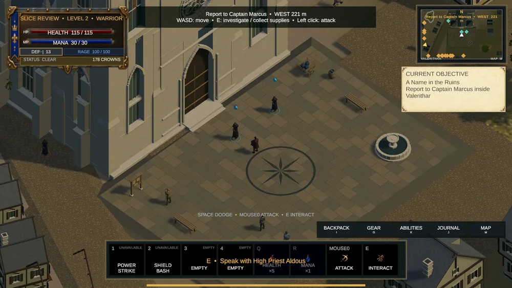
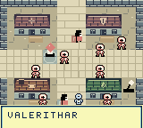
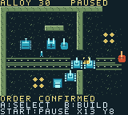

Enterprise software
Caruso Platform
A connected foundation for project delivery, quality assurance, and business operations.
Architecture, product direction, and full-stack development
AI leadership · Engineering · Education
I’m Jeremy Pretty. I turn complex problems into reliable software, capable teams, and practical learning.
Chief AI Officer at PMAT · Founder of TMFPRETTY · Educator
Selected work
Enterprise software
A connected foundation for project delivery, quality assurance, and business operations.
Architecture, product direction, and full-stack development
Agent safety & governance
Runtime governance and containment for AI agents, with policy, auditability, and human oversight built in.
Safety boundaries for meaningful agent actions
Higher education
Helping people understand AI, solve technical problems, and connect theory with practical execution.
AI/ML, computer vision, statistics, and technical leadership
Independent game development
Original games, from handcrafted handheld adventures and strategy to a PC fantasy world in development.
Human creativity. Technical curiosity. A love of making things.
Explore my games


Original PC &My background spans defense and government systems, enterprise software, game development, and higher education. The common thread is helping people do complex work well.
I bring technical depth, product judgment, and an educator’s perspective to the systems I build and the teams I lead.
Keep exploring
Let’s connect
Collaboration, technical leadership, AI, teaching, or an idea worth building.